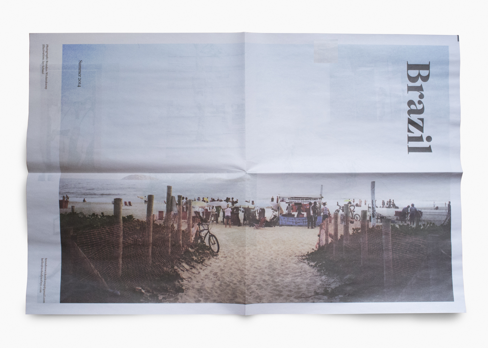
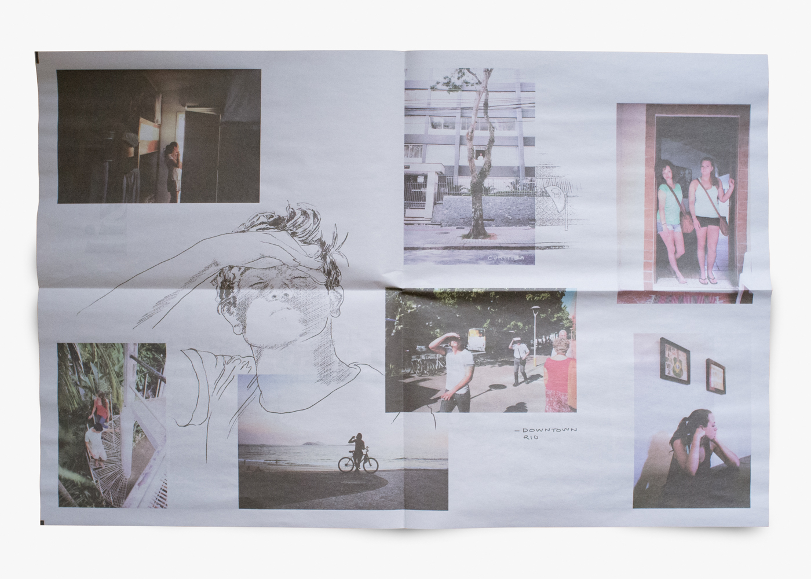
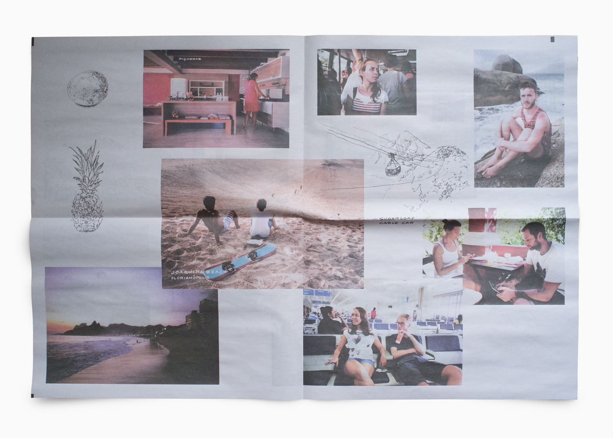

Currently design at Universe. View previous projects I've had the chance to either initiate or be apart of.
Selected Works:
Jukely iOS
- ios
- product
Jukely is a concert subscription service focused on getting you out every night. I came in to the company to help lead a focused redesign of their iOS platform. Along with the support of designers Jordan Obi and Chris Muccioli and the amazing developer, Dan Katz, we built a completely new experience.
Featured as a Best New App in the Apple App Store, December 2015.
A more expansive project description is forthcoming.
Google Fiber
- illustration
- brand
- brian moore
T-Shirt design that announced Google Fiber coming to Austin, TX and Kansas City, MO. This visual motif has gone on to be used for varoius city launches, presentations and general Fiber materials. Made with my bud, Brian Moore.
Instagram: #fiberiscoming
Cloak
- ios
- product
Cloak is an iOS app that uses Foursquare, Instagram, and Twitter to let you know where your "friends" are so you never have to run into that special someone.
Splice
- product
- communication
Splice is a collaboration platform for music creators. I initially worked with their team to create the first version of pieces in their first product iteration. Since then I have stepped in on various projects extending their visual brand.
A.
Selection from an ongoing series of educational videos. The visual motifs are created from UI elements found in each video's topic:


B.
Selection from a series of images created for education events:


Wantful
- product
- brand
- communication
Hired first as a communication designer and then over time spread into owning a large portion of the digital product.

Brazil
- illustration
Collaboration with photographer Brandon Wickenkamp. Drawings and print layout to help illustrate a trip that Brandon took in the Summer of 2014 to Brazil.
  Logos
- logos
Assorted logos and marks.


More work samples here: